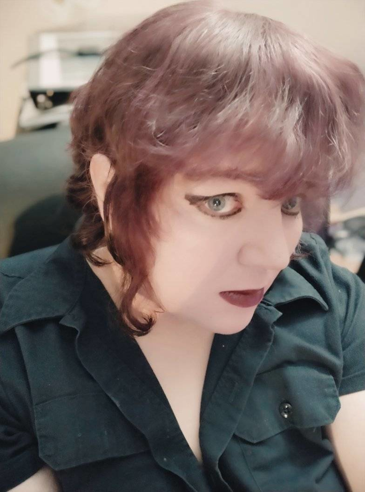

I am a software engineer, artist, writer, and thingdoer who lives in the Pacific Northwest with my partner and our menagerie of strange pets.
I have approximate knowledge of many things.
The site design I am aiming for is accessibility, best practices and minimalism.
If you have a suggestion for improving or simplifying this site, please email me.

This site is intended to be accessible. Please let me know via email if you have problems interacting with any part of it. The font used on all pages is Open Dyslexic, which you can find more info about at Open Dyslexic's Website.